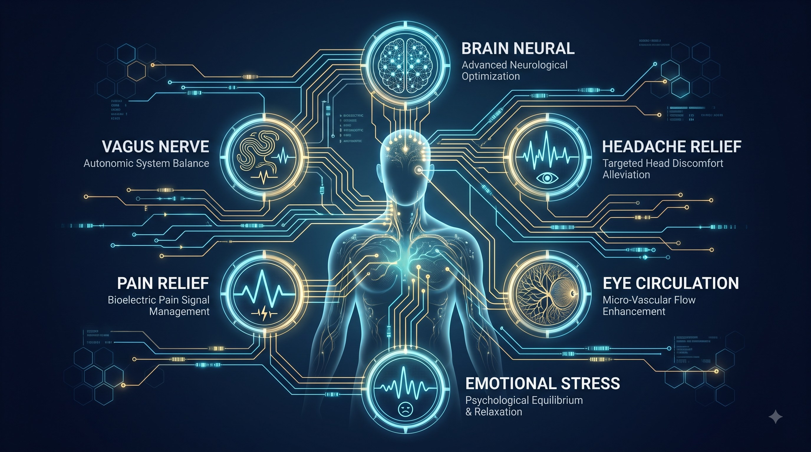
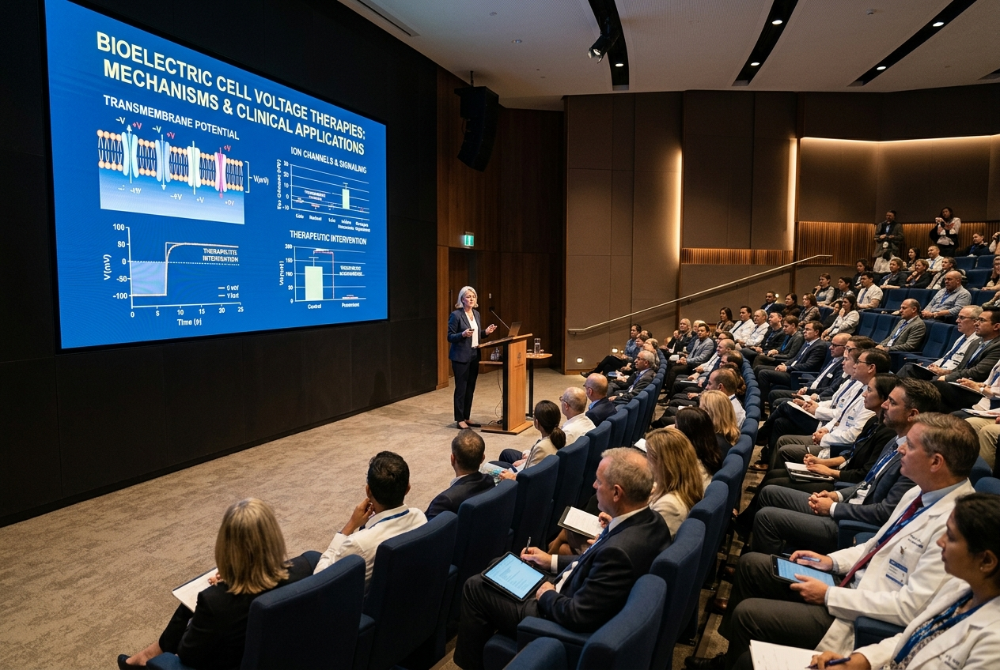

맞춤 특화 케어
목표 지향적 프로토콜 카테고리 (Targeted Categories)
3대 핵심 단계 외에도, 특정 신체 부위 및 증상별 패턴에 맞춘 구조화된 맞춤 프로토콜을 제공합니다.

뇌 신경 & 인지 (Brain)
뇌파 안정 및 중추신경계 신호 조율
미주신경 리셋 (Vagus Reset)
부교감 신경 활성화 및 자율신경 균형
통증 관리 (Pain & Ailment)
급만성 근골격계 통증 완화
안구 & 시신경 (Eye Support)
안구 주변 순환 및 시신경 전압 지원
스트레스 & 감정 (Stress)
정서적 긴장 이완 및 수면 질 개선
두통 케어 (Headache Relief)
경추 및 두경부 긴장성 혈류 개선
공식 의료기기
프로토콜을 완벽하게 구현하는 통합 기술
박창혁 박사의 노바셀 통치 요법® 전 프로토콜을 단 하나의 장비로 직관적이고 안전하게 실행합니다.

공식 의료기기 모델
노바셀 통치 요법® 공식 의료기기
실시간 적응형 바이오피드백 미세전류 기술과 노바셀 극성 정렬 기능을 완벽하게 결합하여, 통증 완화, 신경계 회복 및 세포 전압 재생을 지원하는 첨단 의료기기입니다.
- 생체 적응형 실시간 미세전류 : 환자 조직의 전기 저항에 맞춰 정밀 피드백
- 노바셀 극성 정렬 기능 : 뒤틀린 생체 극성을 신속하게 정상화
- 임상 검증 프로토콜 내장 : 병의원 및 가정에서 안전하고 직관적인 활용

체계적인 교육
과학에서 실전 임상 적용으로의 연결
전압 치유 원리가 과학적 기초를 제공하고, 노바셀 시스템이 이를 구조화된 기술로 전환합니다.
그리고 체계적인 프로토콜과 지속적인 교육이 안전하고 책임감 있는 실천을 보장합니다. 이러한 유기적 연결을 통해, 노바셀의 생체 전기 지원은 단순한 유행이나 고립된 기기 사용이 아닌 깊이 있는 의학적 이해 위에 확고히 자리 잡고 있습니다.